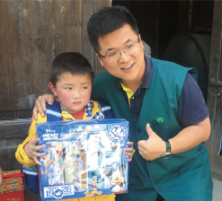
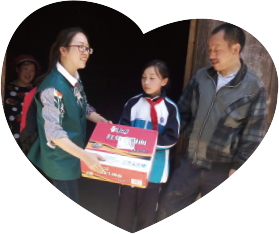
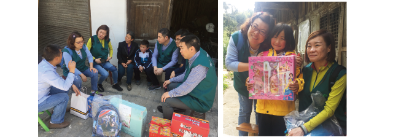
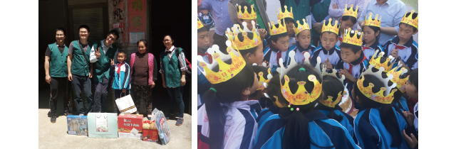

5月26日，来自上海，广州，天津，江苏等地的顶新集团同仁，一早集合出发，载着满满的礼物和爱心，在途四个多小时，去看望石柱冷水小学的同学们。
基金会的同事告诉我们，平时冷水这个地方，一如其名，是比较冷的，即便是夏天，全校师生也习惯穿上一件外套，但是今天气温很适宜。
顶新同仁先是在校方领导和基金会同事的带领下，参观了冷水小学，亲眼见证学校以及顶新公益基金为这些儿童创造更美好的学习环境所做的努力。

父母和家庭的原因，变得不太爱说话，但是其实非常懂事，同仁们一到他家，便急忙跑进屋里，搬凳子出来给大家坐。还有的孩子，父母常年在外打工，自己和奶奶生活，平时也会给奶奶做饭。虽然父母不在，虽然家里条件有限，但孩子们很积极乐观，他们充满阳光的笑容也让同仁们的心灵融化了。同仁们充满关爱的慰问，亲如家人般和这些孩子以及他们相依为命的亲人坐在一起询问近况，体贴关心，同时也代表顶新集团送上康师傅方便面、亲肤夏被、文具礼盒，还有新的校服，漂亮的书包。端午节到了，同仁们也给这些孩子送上了粽子礼盒。家访结束的时候，有的家属依依不舍，一直坚持送我们。我们走远了回头看，他们还站在远处。

接着，顶新同仁便分组对留守儿童进行了家访慰问。有些孩子的家离学校很远，驱车都需要半个多小时，而且在道路十分曲折蜿蜒的山上。有些孩子因为家访结束回到学校，小朋友们用舞龙表演为所有同仁献上感谢。接着，小朋友们又和顶新同仁一起玩你演我猜的游戏，欢声笑语一片。限时包粽子大赛更是让现场一片热火朝天，小朋友和顶新同仁齐心协力包粽子让这个端午显得与众不同。最后，所有同仁给五月的小寿星们送上蛋糕，为他们唱生日歌，送上生日祝福。

陪伴的时间总是过得很快，但是这段经历对所有同仁而言都是难忘而珍贵的。大家也希望这些关怀能够陪伴这些孩子更好地走下去，能让他们更好地成长！而顶新公益基金对这些儿童的关爱也将会一直在路上！